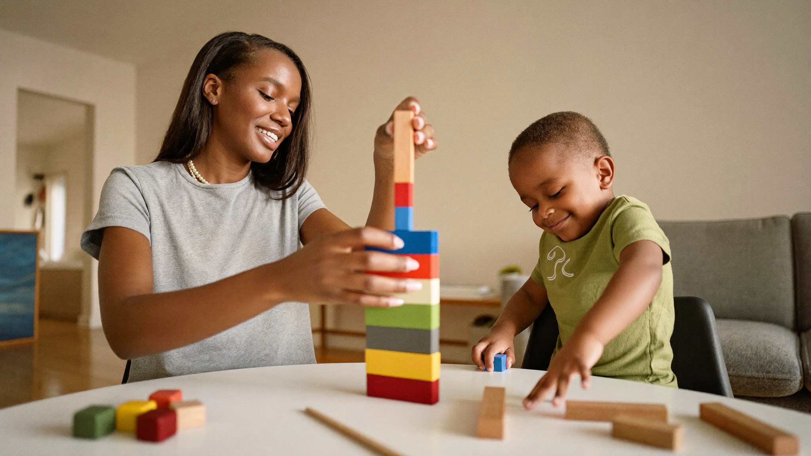

Learning Through Play: Why "Just Playing" Is Real Education
By Leslie Dykstra · Certified Early Childhood Specialist · Williamson County, TN

When a parent tells me their child "just plays all day," I often have to smile. Because what I hear is a child doing exactly what their brain needs. Learning through play is the engine behind early childhood education, and as a certified early childhood specialist, I've watched it work in child after child across Williamson County.
The block tower your child knocks down and rebuilds? That's spatial reasoning and persistence. The tea party with stuffed animals? That's language, social sequencing, and imagination. Playing is serious business, even when it looks effortless.
Why does play count as learning?
Young children don't separate "learning time" from "play time" the way adults do. Their brains build connections through movement, touch, pretend, and repetition. When a child plays, they are:
- Practicing language — narrating, negotiating, asking questions.
- Building math foundations — counting, sorting, comparing sizes.
- Developing fine motor skills — pouring, stacking, drawing, cutting.
- Learning to manage feelings — taking turns, waiting, working through frustration.
These are the exact skills we measure on a Kindergarten Readiness Checklist. Play gets children there — not worksheets.
What kinds of play build the most skills?
Not all play looks the same. Here are the types that build the most ground-floor skills for early readers and learners:
Pretend play (also called dramatic play) builds vocabulary and story comprehension. A child who acts out grocery shopping is learning sequence, categories, and oral language all at once.
Building and construction play (blocks, puzzles, magnetic tiles) builds spatial awareness, geometry thinking, and persistence. These connect directly to early math success.
Drawing and crafting builds fine motor control, which matters more than most parents realize for writing readiness.
Outdoor and movement play isn't just exercise. It builds body awareness, coordination, and the kind of focused attention that helps a child sit and listen at school.
5 playful skill-builders to try this week
You don't need a toy store run. Most of these use what you already have.
- Sort the laundry together. Ask your child to group socks by color, or match them in pairs. Sorting is an early math skill, and kids feel proud helping with real work.
- Build a "story box." Drop a few random items in a shoebox — a toy dog, a spoon, a leaf. Ask your child to make up a story using all three. This grows vocabulary and narrative thinking.
- Play "restaurant." Let your child take your order, write (or draw) it down, and bring you pretend food. They practice writing, memory, and conversation in one go.
- Shape hunt on a walk. Name shapes as you spot them — a square window, a round tire, a triangular roof. Keep a count together. Geometry, language, and fresh air in one afternoon.
- Read the recipe. Even if you're just making sandwiches, let your child follow simple steps in order. Sequencing — first, next, last — is a reading comprehension skill long before a child reads words.
See how none of these feel like school? That's the point.
What should I do when my child just wants to play video games?
Screen play is a real conversation for parents right now. Not all screen time works the same way. Open-ended games that ask children to build, create, or solve problems do activate some learning. But they don't build fine motor skills, oral language, or physical coordination the way hands-on play does.
If you're working on learning goals, try to keep screen time separate from the active and creative play in your child's day, rather than replacing it. Even 30 minutes of building, drawing, or pretend play makes a difference. And if you'd like a plan tailored to your child's specific needs, a free 15-minute conversation with me is a good place to start.
What if my child is starting kindergarten soon?
Play-based learning matters even more in the months before kindergarten. Children who arrive having played a lot tend to have stronger vocabulary, better attention, and more confidence in new situations. You don't need to switch to worksheets. Keep playing — and add a little more intentional conversation alongside it.
Here's more on what kindergarten readiness actually looks like and how you can support it at home: explore our programs for ages 3–8.
Frequently asked questions
My child's preschool plays all day. Should I be doing more at home?
Most likely, no. Preschool play is intentional and well-designed. At home, the best thing you can do is add rich conversation — talk about what they built, ask what happened in their pretend game, read together before bed.
How do I know if my child is learning enough through play?
Watch for curiosity, new words showing up in their speech, and growing patience with harder tasks. Those are the signs. If you're uncertain, our free Kindergarten Readiness Checklist gives you a concrete picture of where your child is.
Is learning through play still relevant once kids are in kindergarten?
Absolutely. Play-based learning supports children through age 8 and beyond. Good kindergarten teachers know this. The best classrooms for 5- and 6-year-olds still include plenty of hands-on, active learning time.
Want to see your child thrive?
If you'd like to talk about where your child is and what would help them most, book a free 15-minute consultation with Leslie. Little Minds, Big Futures — where every child's potential takes flight.